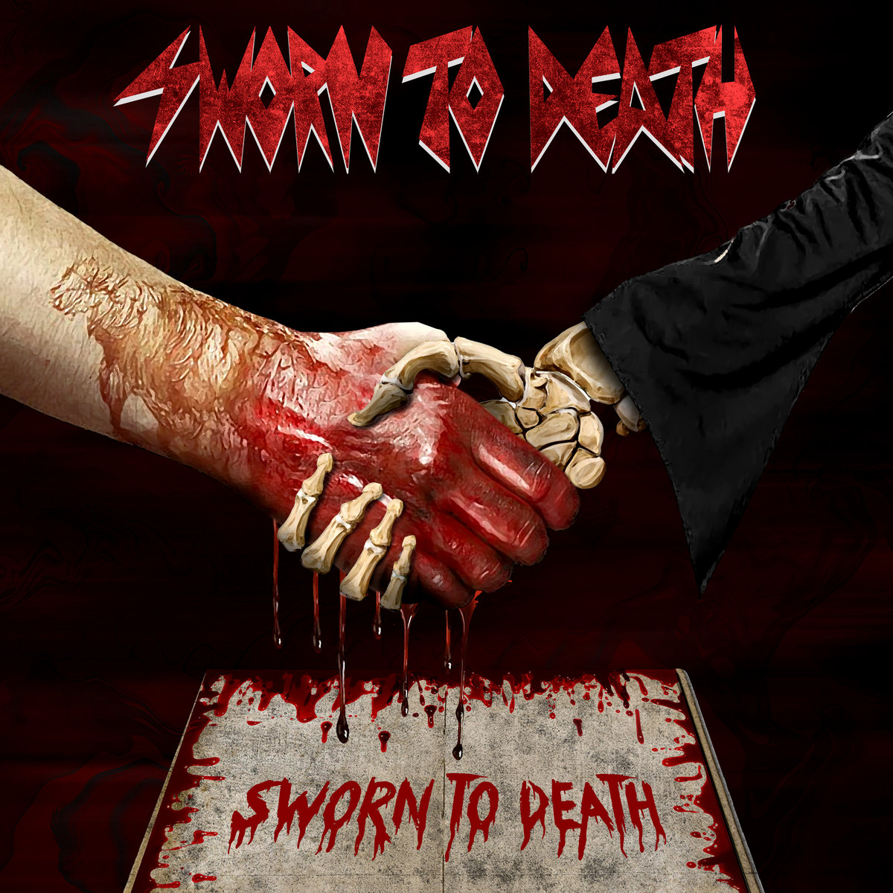

Tko smo mi?

Sworn To Death je zagrebački metal bend osnovan s misijom stvaranja iskrene, žestoke i sonički dominantne glazbe. Nastao kao produkt zajedničke vizije iskusnih glazbenika s lokalne scene, bend uspješno balansira između tehničke preciznosti modernog metala i sirove, iskonske energije undergrounda.
Zvuk benda definiran je čvrstim, nisko usklađenim gitarskim riffovima, dynamicnom i agresivnom ritam sekcijom te moćnim vokalnim izvedbama koje variraju od dubokih growlova do prodirućih krikova. Inspirirani velikanima žanra, ali s čvrstim okretanjem prema vlastitom, modernom autorskom izričaju, Sworn To Death isporučuju mračnu atmosferu zapakiranu u visokoenergetski aranžman.
Pozornica je prirodno stanište benda. Svaki nastup uživo za Sworn To Death predstavlja ritual čiste energije i sinergije s publikom. Bez obzira na veličinu kluba ili festivala, bend isporučuje maksimalan intenzitet, pretvarajući svaki koncert u zvučni zid koji osvaja na prvu. "Za nas metal nije samo žanr, to je stav i prisega od koje ne odstupamo."